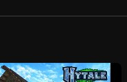

HD / GAMEPLAYGuncraft Zombie Edition
01 / Gameplay
Guncraft Zombie Edition
Round-based undead survival, custom equipment and arcade-inspired gameplay.
View project ↗Custom worlds, creatures and gameplay systems. I turn ideas into experiences built to be played.
Explore my work ↘ YouTube ↗
Explore the worlds and mechanics behind my work.
Round-based undead survival, custom equipment and arcade-inspired gameplay.
View project ↗
A Fallout-inspired exploration of post-apocalyptic worldbuilding.
View project ↗No matching projects.
JavaScript gameplay logic and custom interactions.
Creature design and behavior.
Custom content and mechanics.
Environments and exploration.
Blockbench-style game assets.
Menus and player-facing experiences.
I build Minecraft Bedrock addons and game-inspired experiences, combining creative design with scripting and custom content.
For custom development, commissions or collaborations, connect through my creator channels.
GitHub ↗ YouTube ↗ TikTok ↗ Twitch ↗